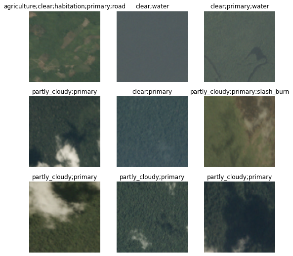
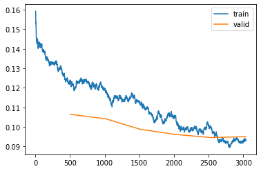
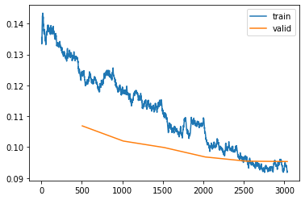
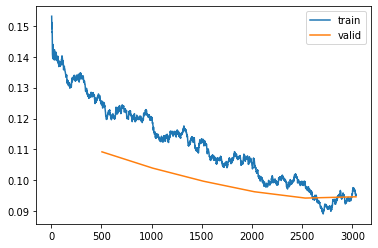
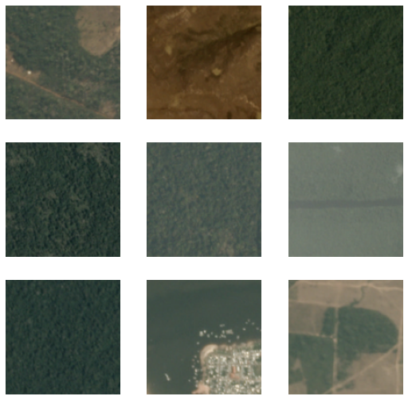

import pandoc
from fastbook import *
from fastai import *Multi-label Classification of Amazonian Land Space
Python
Deep Learning
Computer Vision
Project
creds = '{"username":"jakegehri","key":"3d0213a52bd1816d21037e941bc77569"}'# Creates a cred path for kaggle datasets to be downloaded in comand line
cred_path = Path('~/.kaggle/kaggle.json').expanduser()
if not cred_path.exists():
cred_path.parent.mkdir(exist_ok=True)
cred_path.write_text(creds)
cred_path.chmod(0o600)path = Path('./planet/planet')path.ls()(#4) [Path('planet/planet/train_classes.csv'),Path('planet/planet/test-jpg'),Path('planet/planet/sample_submission.csv'),Path('planet/planet/train-jpg')]train = (path/'train-jpg').ls()train(#40479) [Path('planet/planet/train-jpg/train_19921.jpg'),Path('planet/planet/train-jpg/train_24619.jpg'),Path('planet/planet/train-jpg/train_21510.jpg'),Path('planet/planet/train-jpg/train_31089.jpg'),Path('planet/planet/train-jpg/train_33277.jpg'),Path('planet/planet/train-jpg/train_11172.jpg'),Path('planet/planet/train-jpg/train_14671.jpg'),Path('planet/planet/train-jpg/train_29521.jpg'),Path('planet/planet/train-jpg/train_27535.jpg'),Path('planet/planet/train-jpg/train_13323.jpg')...]data = (path/'train_classes.csv')df = pd.read_csv(data)df.head()| image_name | tags | |
|---|---|---|
| 0 | train_0 | haze primary |
| 1 | train_1 | agriculture clear primary water |
| 2 | train_2 | clear primary |
| 3 | train_3 | clear primary |
| 4 | train_4 | agriculture clear habitation primary road |
dblock = DataBlock()dsets = dblock.datasets(df)dsets[0](image_name train_0
tags haze primary
Name: 0, dtype: object,
image_name train_0
tags haze primary
Name: 0, dtype: object)def get_x(r): return path/'train-jpg'/(r['image_name'] + '.jpg')
def get_y(r): return r['tags'].split(' ')dblock = DataBlock(get_x=get_x, get_y=get_y)
dsets = dblock.datasets(df)
dsets.train[0](Path('planet/planet/train-jpg/train_1398.jpg'),
['agriculture', 'partly_cloudy', 'primary', 'road'])dblock = DataBlock(blocks = (ImageBlock, MultiCategoryBlock),
get_x=get_x, get_y=get_y)
dsets = dblock.datasets(df)
dsets.train[0](PILImage mode=RGB size=256x256,
TensorMultiCategory([1., 0., 0., 0., 0., 0., 0., 0., 1., 0., 0., 1., 1., 0., 0., 0., 0.]))dblock = DataBlock(blocks = (ImageBlock, MultiCategoryBlock),
splitter=RandomSplitter(seed=42),
get_x=get_x, get_y=get_y)
dsets = dblock.datasets(df)len(dsets.train), len(dsets.valid)(32384, 8095)dblock = DataBlock(blocks = (ImageBlock, MultiCategoryBlock),
splitter=RandomSplitter(seed=42),
get_x=get_x, get_y=get_y,
item_tfms=RandomResizedCrop(128, min_scale=0.35)
)
dls = dblock.dataloaders(df)dls.show_batch()
Experiment 1
learn = vision_learner(dls, resnet18, metrics=accuracy_multi)
learn.fine_tune(6, freeze_epochs=2)
learn.recorder.plot_loss()/usr/local/lib/python3.9/dist-packages/torchvision/models/_utils.py:208: UserWarning: The parameter 'pretrained' is deprecated since 0.13 and will be removed in 0.15, please use 'weights' instead.
warnings.warn(
/usr/local/lib/python3.9/dist-packages/torchvision/models/_utils.py:223: UserWarning: Arguments other than a weight enum or `None` for 'weights' are deprecated since 0.13 and will be removed in 0.15. The current behavior is equivalent to passing `weights=ResNet18_Weights.IMAGENET1K_V1`. You can also use `weights=ResNet18_Weights.DEFAULT` to get the most up-to-date weights.
warnings.warn(msg)
Downloading: "https://download.pytorch.org/models/resnet18-f37072fd.pth" to /root/.cache/torch/hub/checkpoints/resnet18-f37072fd.pth| epoch | train_loss | valid_loss | accuracy_multi | time |
|---|---|---|---|---|
| 0 | 0.242502 | 0.150174 | 0.945827 | 00:25 |
| 1 | 0.147816 | 0.126972 | 0.951968 | 00:20 |
| epoch | train_loss | valid_loss | accuracy_multi | time |
|---|---|---|---|---|
| 0 | 0.127971 | 0.109930 | 0.957991 | 00:23 |
| 1 | 0.119986 | 0.104264 | 0.960476 | 00:23 |
| 2 | 0.109712 | 0.098336 | 0.962301 | 00:38 |
| 3 | 0.104570 | 0.097734 | 0.962555 | 00:49 |
Experiment 2
learn2 = vision_learner(dls, resnet34, metrics=accuracy_multi)
learn2.fine_tune(6, freeze_epochs=2)
learn2.recorder.plot_loss()| epoch | train_loss | valid_loss | accuracy_multi | time |
|---|---|---|---|---|
| 0 | 0.244604 | 0.147677 | 0.947447 | 00:51 |
| 1 | 0.148016 | 0.123402 | 0.953312 | 00:25 |
| epoch | train_loss | valid_loss | accuracy_multi | time |
|---|---|---|---|---|
| 0 | 0.123248 | 0.106454 | 0.959452 | 00:59 |
| 1 | 0.118266 | 0.104211 | 0.960942 | 00:34 |
| 2 | 0.111732 | 0.098766 | 0.962381 | 00:42 |
| 3 | 0.105815 | 0.096162 | 0.963245 | 00:34 |
| 4 | 0.099851 | 0.094583 | 0.964037 | 00:34 |
| 5 | 0.093574 | 0.095035 | 0.963848 | 00:34 |

Experiment 3
learn3 = vision_learner(dls, resnet34, metrics=partial(accuracy_multi, thresh=0.2))
learn3.fine_tune(6, freeze_epochs=2)
learn3.recorder.plot_loss()| epoch | train_loss | valid_loss | accuracy_multi | time |
|---|---|---|---|---|
| 0 | 0.240184 | 0.151341 | 0.934862 | 00:38 |
| 1 | 0.151022 | 0.122403 | 0.939382 | 00:27 |
| epoch | train_loss | valid_loss | accuracy_multi | time |
|---|---|---|---|---|
| 0 | 0.124375 | 0.106883 | 0.950107 | 00:35 |
| 1 | 0.118021 | 0.101975 | 0.951757 | 00:34 |
| 2 | 0.109789 | 0.099863 | 0.952055 | 00:34 |
| 3 | 0.104578 | 0.096811 | 0.951851 | 00:34 |
| 4 | 0.095859 | 0.095459 | 0.953784 | 00:34 |
| 5 | 0.092178 | 0.095330 | 0.954445 | 01:02 |

Experiment 4
learn4 = vision_learner(dls, resnet34, metrics=partial(accuracy_multi, thresh=0.7))
learn4.fine_tune(6, freeze_epochs=2)
learn4.recorder.plot_loss()| epoch | train_loss | valid_loss | accuracy_multi | time |
|---|---|---|---|---|
| 0 | 0.248779 | 0.148406 | 0.942892 | 00:52 |
| 1 | 0.147272 | 0.123920 | 0.950325 | 00:37 |
| epoch | train_loss | valid_loss | accuracy_multi | time |
|---|---|---|---|---|
| 0 | 0.125626 | 0.109230 | 0.955863 | 00:48 |
| 1 | 0.118446 | 0.103957 | 0.956015 | 00:34 |
| 2 | 0.112594 | 0.099723 | 0.958754 | 00:37 |
| 3 | 0.106374 | 0.096328 | 0.958689 | 00:51 |
| 4 | 0.099089 | 0.094283 | 0.960499 | 00:34 |
| 5 | 0.095276 | 0.094695 | 0.961879 | 00:39 |

test_dl = learn2.dls.test_dl(get_image_files(path/'test-jpg'))
test_dl.show_batch()
preds, _ = learn2.get_preds(dl=test_dl)thresh = 0.5
labelled_preds = [' '.join([learn2.dls.vocab[i] for i,p in enumerate(pred) if p > thresh]) for pred in preds]labelled_preds[:5]['agriculture clear primary road',
'bare_ground clear',
'clear primary',
'clear primary',
'clear primary']fnames = []
for name in os.listdir((path/'test-jpg')):
fnames.append(name)fnames[0:5]['test_36099.jpg',
'test_27503.jpg',
'test_15453.jpg',
'test_20695.jpg',
'test_5439.jpg']learn2.predict((path/'test-jpg'/(fnames[0])))((#4) ['agriculture','clear','primary','road'],
TensorBase([ True, False, False, False, False, True, False, False, False, False, False, False, True, True, False, False, False]),
TensorBase([9.0538e-01, 3.7246e-04, 4.8710e-02, 5.2741e-04, 2.3139e-04, 9.9834e-01, 1.1549e-05, 2.1592e-04, 2.8083e-01, 2.6772e-01, 1.3102e-03, 5.9414e-04, 9.9820e-01, 7.1026e-01, 3.3888e-03,
1.9953e-02, 1.1821e-01]))sample = pd.read_csv(path/'sample_submission.csv')
sample| image_name | tags | |
|---|---|---|
| 0 | test_0 | primary clear agriculture road water |
| 1 | test_1 | primary clear agriculture road water |
| 2 | test_2 | primary clear agriculture road water |
| 3 | test_3 | primary clear agriculture road water |
| 4 | test_4 | primary clear agriculture road water |
| ... | ... | ... |
| 61186 | file_9995 | primary clear agriculture road water |
| 61187 | file_9996 | primary clear agriculture road water |
| 61188 | file_9997 | primary clear agriculture road water |
| 61189 | file_9998 | primary clear agriculture road water |
| 61190 | file_9999 | primary clear agriculture road water |
61191 rows × 2 columns
df = pd.DataFrame({'image_name':fnames, 'tags':labelled_preds}, columns=['image_name', 'tags'])df| image_name | tags | |
|---|---|---|
| 0 | test_36099.jpg | agriculture clear primary road |
| 1 | test_27503.jpg | bare_ground clear |
| 2 | test_15453.jpg | clear primary |
| 3 | test_20695.jpg | clear primary |
| 4 | test_5439.jpg | clear primary |
| ... | ... | ... |
| 40664 | test_12322.jpg | clear primary water |
| 40665 | test_10596.jpg | agriculture partly_cloudy primary road |
| 40666 | test_567.jpg | partly_cloudy primary |
| 40667 | test_23428.jpg | agriculture clear primary |
| 40668 | test_10099.jpg | clear primary |
40669 rows × 2 columns